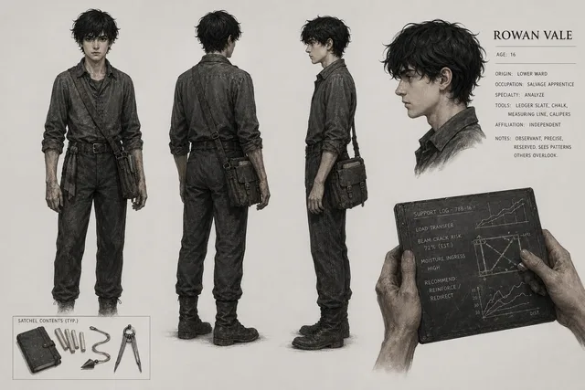
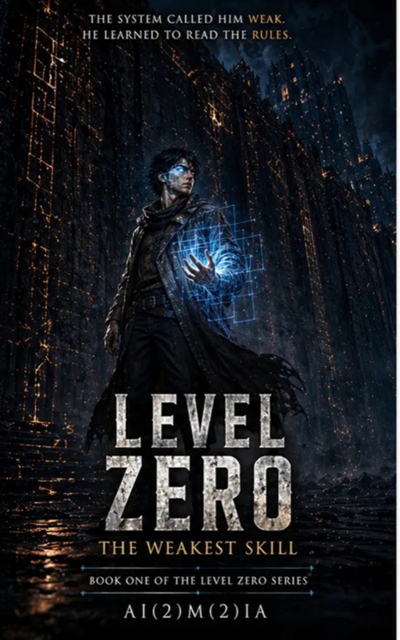
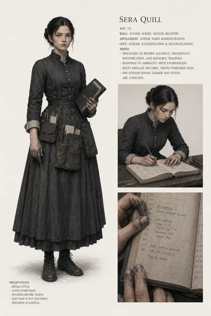

Rowan Vale
The Lowest ClassRanked as Level Zero. His ability Analyze can only read structure. In a society that ranks physical force, he uses it to dissect the system itself.
Progression Fantasy
Three books. One impossible reading.
Rowan Vale receives Analyze, the lowest-classified skill in Wardspire, and begins reading the hidden architecture of the system that ranked him weak. A trilogy about power, structure, and the cost of understanding what you are inside.
Rowan is classified Level Zero. His skill, Analyze, reads structure — in a world where structure is everything and force is valued above all else.
The ranking system isn't broken. Rowan is starting to see exactly how it works, and that is worse.
The final argument. Rowan's reading of the system becomes the test of whether the system deserves to survive it.

Ranked as Level Zero. His ability Analyze can only read structure. In a society that ranks physical force, he uses it to dissect the system itself.
Progression Fantasy
A core member of the lower-yard network. She helps Rowan decode the civic scripts of Wardspire while hiding her own institutional status.
Progression Fantasy